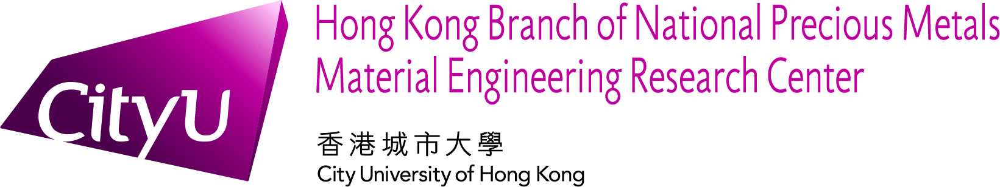
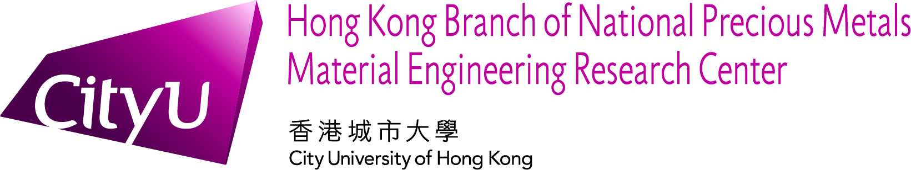

Working Experience
JUN 2023 – NOV 2023
Hong Kong Branch of National Precious Metals Material Engineering
Research Center
Website Design and Maintenance (Part-time)

Website Design and Maintenance (Part-time)
- Updated information and created five HTML pages with a preliminary design using CSS for the International Conference: IUMRS-ICEM 2024, ensuring accurate and visually appealing content presentation.
- Maintained and updated the official website of NPMM using Drupal CMS, ensuring the website's functionality and content are up to date.
- Improved the user interface (UI) of the Hong Kong Materials Research Society’s official website using CSS, HTML, and WordPress, resulting in enhanced user experience and increased website traffic.
- Conducted data verification and processing using Microsoft Excel, make sure of the accuracy and completeness of data.

Education
2021 – 2025
Bachelor of Engineering: Information Engineering
Cumulative GPA: 3.21 / 4.3
Courses with B+ or above
2014 – 2021
The Methodist Church Hong Kong Wesley College
Hong Kong Diploma of Secondary Education Examination
Hong Kong Diploma of Secondary Education Examination
Skills
Languages
Native:
- Cantonese
- English
- Mandarin
Computer Skills
Good:
- Microsoft Office
- Python
- C++
- Java
- HTML
- CSS
- JavaScript
- MATLAB
Soft Skills
- Problem-Solving
- Communication
- Adaptability
- Interpersonal ability
- Organization skills
- Presentation skills
Personal Programming Projects
| Month/Year | Project | Project Description |
|---|---|---|
| 01/2024 | Digital Profile |
This digital profile is created using HTML, CSS, and JavaScript,
with optimization for mobile devices as well.
Source Code |
| 01/2024 |
Online Banking Simulation |
The "Online Banking Simulation" is a web-based application that
simulates the functionality of an online banking system. The
application allows users to perform various banking
transactions, such as creating a new account, depositing money,
withdrawing money, transferring money to other accounts, and
viewing their account details and transaction history. The
application is built using HTML, CSS, and JavaScript, and is
designed to be user-friendly. It features a
responsive layout that adapts to different screen sizes and
devices, making it easy to use on desktop computers, laptops,
tablets, and smartphones.
|
Public Services
2018 - 2024
Food and Environmental Hygiene Department and Centre for Food
Safety
Member of Consumer Liaison Group
Member of Consumer Liaison Group
- Attend focus group meetings
- Participate in the Centre for Food Safety's survey
- Give advice and suggestions on food safety and risk communication issues